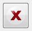

Working with Accidents, Hazards, Safety Constraints, Design
Requirements and Control Actions
追加と削除
提示されたビューから一つを操作バーから選択する。The navigation bar is the left section of the ATSTPA window, it splits the views into the three steps Analysis Fundamentals, Unsafe Control Actions and Causal Analysis. After selecting the desired view, click on to add an item to the list. can be used to delete an item or multiple items by selecting more than one item by holding the shift button. 選択したアイテムを削除してよいか、確認されます。
タイトルと記述の編集
既存のアイテムのタイトルをダブルクリックするか、エンターキーを入力することで、選択したアイテムのタイトルを編集できます。The item description of the selected item is shown in the right section of the ATSTPA window. 記述のテキストをクリックすることで編集できます。